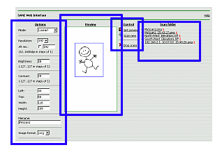

|
| SANE Web Interface - Help |
|
|
Sane
SANE (Scanner Access Now Easy) is software for Unix like operating systems (BSD, Linux), that controls the scanner and allows other computers on the same network to access it.
So far there was no convenient way for users of MS Windows to utilize this service.
Therefore this "scanner portal" was developed. Every employee who has the Internet Explorer browser now is able to use the SANE operated scanner.
|
InterfaceClick on marked areas to go directly to the description of that interface section.

Note: You can get instant help on particular interface section during your work if you click the section header. |
1. Options

|
Here you set the scanning options.
Mode
Lineart - black-and-white;
Grayscale - shades of gray (like in old photographs);
Color - color.
Resolution
Sets the "magnification" when scanning.
Default values are given so that they can be divided by 8, which is required by software when scanning black-and-white images. Any other value can be set checking the "Alt.res." checkbox and putting in the desired value.
Brightness
Adjusts the brightness of the scan in comparison to the standard level.
Contrast
Adjusts the contrast of the scan in comparison to the standard level.
Left,Top,Width,Height
Sets dimensions of the area to scan, i.e. x and y of the top left corner and width and height of the scan area. Default is ISO A4 paper size.
Filename
Here you may assign a specific filename to the scan image file, if you wish.
As well you may leave this blank, then the file name will be generated automatically and will contain the IP address of the client computer and the timestamp.
If accidentally you scan twice with the same name, don't worry, the new scan will have name with a timestamp added. The old scan will remain in place.
Image format
Choose what format the data coming from the scanner will be stored in. Possible choices:
png - (Portable Network Graphics), alpha channel, good quality with good compression. Open standard.
tiff - (Tagged Image File Format), optimal for saving of black-and-white images. Similar to JPEG. For AutoCAD b/w background images use this!
bmp - (Microsoft Windows Bitmap), very big files, usually not compressed.
gif - (Graphics Interchange Format), alpha channel, good lossless compression, but only max 256 colors.
|
Top |
2. Preview
|
Here you can see a smaller preliminary image which can be acquired by clicking the "Get preview" button.
The purpose of this is to let you :
adjust the scanning options with no need to do a full scan, thus saving time;
select only a part of the image for scanning
When acquiring a preview the following of the options are taken into account by the software:
mode;
brightness;
contrast.
Press the left mouse button and drag the mouse to select the scan area, then release the button.
Note: When you initially start your session, you will see the preview image acquired during the last session. Place your document into the scanner, adjust scanning options and acquire your own preview image.
|
Top |
3. Control
|
These are controls:
Get preview - acquires a new preview image;
Scan new - scans the selected scan area and produces a new image file;
Drop scans - deletes all image files stored on server.
|
Top |
4. Scan folder
|
Scanned images are stored in a special directory on the server.
You can:
a) open them directly by just clicking the file name;
b) save them on your computer by right clicking the file name and selecting "Save target as".
Particular file may be deleted by clicking the red "X" after the file name.
Name of the image file is either the one provided by user or the automatically generated one containing the IP of the client and the timestamp.
File extension depends upon the selected image format.
Note: If the automatically generated image file name displays IP address which is not yours, possibly your connection is going through the proxy server. Turn proxy off for local addresses in your Internet Explorer options.
|
Top |
|
| Copyright (c) 2003 Gunars Benga |
|
SANE Web Interface is free software distributed under the terms of the
GNU General Public License |